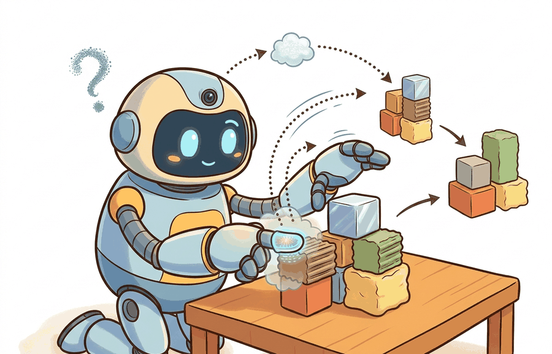

"Vision said the grasp looked good. Touch said the object was already on the floor."
A Tactile Sensor With Opinions

This section assumes familiarity with the sensor noise and measurement models introduced in section 8.1 and with the reactive control loop described in section 7.1. The force/torque contact detection developed here feeds directly into the manipulation controllers in section 42.3, where slip detection and contact-state estimation are used to close the grasp loop. The tactile representation also recurs in Part IX alongside learned manipulation policies that condition on contact feedback.
A robot hand grips an egg. The camera reports a clean, stable grasp. Half a second later the egg is on the floor, because the fingers had already begun to slip and no vision system can see forces. Touch can. Visuotactile sensors like GelSight and DIGIT image gel-pad deformation at camera resolution, turning contact pressure into dense spatial data a neural network can read, as Figure 8.4A illustrates with its gel layer, embedded camera, and LED ring. Dexterous manipulation, safe handovers, and precision assembly all stalled for years on this single missing modality. As of 2024, compact, learned tactile sensing has become practical, and the manipulation frontier is moving fast. Here you will build the measurement model, understand slip detection, and connect contact feedback to a reactive control loop.
A 30 fps camera blinks every 33 milliseconds; a fingertip can begin to slip and drop a glass in less than that, between two frames the robot never even saw change. This section builds the one modality that closes that blind spot: it first defines what tactile and force/torque sensing observes, then connects it to the agent loop, then tests it with a compact implementation.
Tactile and force/torque sensing answers four practical questions: what must the agent know, what can it observe, what action is available, and what evidence shows that the action worked under the stated conditions.
A representation earns its place when it changes the measurable action interface. In Tactile and force/torque sensing (GelSight, DIGIT): preview, the reader should keep asking which decision becomes easier, safer, or more reliable.
Vision tells a robot where an object is and roughly what shape it has. It cannot tell whether the grasp is slipping, whether the insertion force is safe, or whether the fingertip has lost contact. Tactile and force/torque sensing fills that gap. It provides direct evidence of contact at the timescales that matter for reactive control, typically 100 Hz to 1 kHz. A camera loop runs at 30 frames per second. A slip event that develops in 20 ms is invisible to vision: the next frame arrives 33 ms later, after the object has already fallen. A tactile sensor at 500 Hz detects that same slip in 2 ms, giving the controller ten times the reaction window. Touch is not a supplement to vision; it is the only modality that reports what the hand is actually doing. Occlusion, lighting changes, and the sub-millimetre scale of slip onset make cameras alone insufficient. USB assembly, seedling transplanting, and handing a glass to a person all fail on this gap. Tactile and force signals directly observe the contact state; no other modality does. The pipeline diagram below traces this end to end: object contact deforms the gel, LED illumination shifts the camera image, and a per-taxel threshold flags slip onset within 2 ms, well inside the 33 ms gap between vision frames.
Theory
For Tactile and force/torque sensing (GelSight, DIGIT): preview, the practical design rule is to make the interface inspectable before optimization begins: inputs, outputs, units, latency, bounds, and failure labels should all be visible in the saved artifact.
The mechanism in Tactile and force/torque sensing (GelSight, DIGIT): preview is the contract between representation and action. Name what enters the module, what leaves it, which assumptions make that transformation valid, and which log would reveal a bad handoff.
Worked Example: Force/Torque Sensor Noise and Contact Detection
The cleanest place to see that representation-to-action contract become concrete is the simplest tactile-adjacent device, the wrist force/torque sensor, where the contract reduces to a single question: when is a reading really contact and not noise?
A six-axis force/torque sensor at a robot wrist reports three forces and three torques: $(F_x, F_y, F_z, T_x, T_y, T_z)$. Even with no contact it never reads exactly zero. There is per-channel noise, and there is a slowly drifting bias from temperature and from the unmodeled weight of the tool past the sensor. Contact detection is a hypothesis test against this noise floor: a force is real only when it exceeds a threshold set a few standard deviations above the resting noise, otherwise the gripper will trigger on its own sensor jitter. The same logic governs tactile arrays like GelSight and DIGIT, where each taxel (tactile pixel, a single sensing element in the array) carries its own noise and the contact decision is a per-pixel threshold against a no-contact baseline.
# Force/torque sensor: a resting 6-axis sensor still reads nonzero noise.
# Set a contact threshold from the measured noise floor.
import numpy as np
rng = np.random.default_rng(2)
# Per-channel noise std: forces in N, torques in Nm.
ft_sigma = np.array([0.10, 0.10, 0.10, 0.005, 0.005, 0.005])
resting = rng.normal(0.0, ft_sigma, size=(500, 6)) # 500 no-contact samples
noise_floor = resting.std(axis=0)
threshold = 5.0 * noise_floor # 5-sigma contact decision boundary
# A new reading with a small genuine push in +Fz.
reading = np.array([0.03, -0.05, 0.62, 0.001, 0.002, -0.001])
contact = np.abs(reading) > threshold
print("noise floor (Fx..Tz):", np.round(noise_floor, 3))
print("5-sigma threshold :", np.round(threshold, 3))
print("channels in contact :", np.where(contact)[0]) # expect channel 2 (Fz)Step-Through: 5-sigma contact detection on one F/z channel
Trace the contact decision for the $F_z$ channel with concrete numbers. Suppose the 500 resting samples on $F_z$ produce a measured standard deviation of $\sigma = 0.102$ N (close to the 0.10 N injected). The threshold is then $5\sigma = 5 \times 0.102 = 0.510$ N. Now three readings arrive, one at a time. (1) Resting jitter: $F_z = 0.041$ N. Test: $|0.041| > 0.510$? No, so no contact (correctly ignored). (2) Light brush: $F_z = 0.38$ N. Test: $|0.38| > 0.510$? No, still below the gate, so this faint touch is rejected as possible noise. This is the deliberate cost of a 5-sigma gate: a real but tiny force can be missed. (3) Genuine push: $F_z = 0.62$ N. Test: $|0.62| > 0.510$? Yes, so contact fires on channel 2. Notice the margin: 0.62 clears the 0.510 gate by only 0.11 N, so if the gel had warmed and inflated the noise floor to $\sigma = 0.13$ N (threshold 0.65 N), that same 0.62 N push would now be missed. This is exactly why the recipe re-measures the noise floor rather than hard-coding a number.
The fragment should keep contact threshold, force direction, taxel or image coordinate, timestamp, and gripper state visible. Tactile SDKs and ROS logs are useful only when the contact contract is explicit.
Practical Recipe
Keeping that contact contract explicit on paper is only half the job; the following steps are what make it hold once a real gel pad and a warming fingertip enter the loop.
- Before mounting a GelSight or DIGIT sensor, characterize its gel stiffness on a flat surface at three normal loads (0.5 N, 1 N, 2 N) and record the pixel-intensity response curve. GelSight gels soften with temperature and harden after extended compression; a curve taken at room temperature can be off by 15 percent after 30 minutes of repeated grasps on a warm fingertip.
- Implement a 5-sigma contact threshold (as in Code Fragment 8.4.1) as the baseline slip detector before training any learned model. This threshold fires reliably on the ATI Nano17 at 500 Hz and on the Franka Panda wrist sensor at 1 kHz, and it exposes calibration drift before it corrupts downstream learning.
- Synchronize tactile and visual streams using hardware timestamps, not software receive times. On a typical ROS 2 setup with a USB DIGIT and a Realsense D435, software jitter reaches 8-12 ms, which is enough to associate a post-slip tactile frame with a pre-slip visual frame and cause a visuotactile policy to misattribute grasp failure.
- Log raw tactile images (not only classification labels) together with gripper joint angles and object pose for every episode. The TACTO simulator and the Touch and Go dataset both store this format; having it in your real-robot logs makes sim-to-real transfer analysis possible without re-collecting data.
- Test at least three surface materials (smooth plastic, textured rubber, rigid metal) before trusting a slip-detection threshold. The Coulomb friction coefficient is the ratio of the maximum tangential (sideways) force a contact can sustain to the normal (pressing) force before it slips and spans roughly 0.1 to 0.8 across these materials, which shifts the tangential force at which slip onset occurs by nearly an order of magnitude and invalidates any single-material calibration.
The common mistake in Tactile and force/torque sensing (GelSight, DIGIT): preview is to celebrate the component score before checking the closed-loop handoff. The failure usually appears at the boundary: stale state, wrong frame, delayed action, saturated actuator, or metric that ignores the real task cost.
A robotics team using Tactile and force/torque sensing (GelSight, DIGIT): preview should log not only final success, but intermediate observations, chosen actions, controller status, and recovery events. The logs reveal whether the method is solving the task or merely passing the easiest episodes.
Remember GelSight by its trick: it is a webcam staring at the back of a clear silicone thumb, watching colored shadows ripple as objects press in. DIGIT shrank that same webcam-behind-gel idea into a fingertip Meta open-sourced for about 15 dollars in parts. When a grasp fails, ask which sensor would have caught it first: the wrist force/torque cell sees the egg only once it is already falling, the gel sees the shear creep toward one edge 100 ms earlier. Touch beats vision precisely because it reports what the hand is doing, not what the scene looks like.
Real-World Application: USB and connector insertion in factory cells
Industrial assembly cells from companies like Mitsubishi Electric and research deployments at Toyota Research Institute use wrist force/torque sensing (often an ATI Nano17 or a Franka Panda built-in sensor) to perform peg-in-hole and connector mating where vision alone cannot resolve sub-millimetre misalignment. The controller runs a guarded search, where a guarded search is a motion that advances slowly until a force threshold is crossed and then stops or changes direction: it moves until the lateral force exceeds a calibrated contact threshold, then servos to null the tangential wrench, where a wrench is the combined six-component vector of the three forces and three torques acting at a frame, which is the same 5-sigma contact logic developed here scaled to a real insertion loop. Tactile imagers like GelSight are now being added to these cells to localise which edge of the connector caught, turning a blind force search into a directed correction.
Visuotactile foundation models and large-scale pretraining (2024-2026). Researchers are now training general-purpose tactile representations on datasets spanning thousands of objects and surface types, rather than fitting per-sensor calibration curves. Meta AI's Sparsh (2024) pretrains a vision transformer on 460,000 tactile image pairs collected with DIGIT sensors across diverse grasps, then fine-tunes it for downstream slip detection and texture classification. The key finding is that a pretrained tactile backbone transfers to new objects with far fewer labeled examples than training from scratch, closely mirroring the trajectory of visual foundation models in 2021-2022.
Soft and conformable tactile skins for whole-body contact (2024-2026). Fingertip sensors cover only a small patch; current research is scaling tactile coverage to entire robot arms and torsos. The lab of Russ Tedrake at MIT and collaborators at Toyota Research Institute demonstrated in 2024 that wrapping robot forearms in compliant tactile skins changes the planning problem: the controller can now detect incidental forearm contacts during constrained insertion tasks rather than treating them as disturbances. The open challenge is sensor-to-robot calibration when the skin deforms with the arm.
Before reading on, consider this: in a 2024 benchmark of visuotactile grasping policies, sim-to-real transfer failures on new object geometries accounted for roughly 60% of all task-level drops, even when visual sim-to-real was already solved. Tactile sim-to-real is the remaining bottleneck, and the gap is shrinking fast.
Sim-to-real transfer for tactile policies via differentiable contact simulation (2024-2025). Tactile sim-to-real has historically lagged behind vision because gel deformation is hard to simulate accurately. The Taxim simulator (Columbia, 2022) and its 2024 successors use finite-element gel models, where a finite-element model divides the gel into small connected pieces and computes how each piece deforms under load, inside differentiable physics engines (MuJoCo MJX, Isaac Lab) to back-propagate policy gradients directly through the tactile image formation process. Carnegie Mellon's 2024 work on "TacDiffusion" shows that a diffusion model conditioned on wrist force/torque (F/T) and tactile images can synthesize realistic in-hand contact trajectories for data augmentation, closing much of the sim-to-real gap for dexterous manipulation.
Open problem. Tactile sensors degrade: gel pads wear, illumination shifts, and contact residue accumulates. No current system can detect its own calibration drift online and recalibrate autonomously during a deployment. A tractable research question is: can a robot use brief intentional contacts with objects of known geometry (a calibration cube mounted in the workspace) to maintain a live estimate of gel-stiffness and illumination state, and does this online recalibration measurably extend reliable deployment time on a dexterous manipulation benchmark?
Can you name the observation, state estimate, action, success metric, and most likely failure mode for Tactile and force/torque sensing (GelSight, DIGIT): preview? If not, the system boundary is still too vague.
Production Pattern
Tactile and force/torque sensing (GelSight, DIGIT): preview sits inside the Part II robotics contract: geometry defines where things are, kinematics defines what motion is possible, dynamics defines what motion costs, control defines how errors are corrected, and sensing defines what the agent can know on time.
Tactile and force signals are local, noisy, and contact-dependent, so they demand calibration and contact context. That is what makes the modality tractable at once for practitioners, builders, and researchers: an intuitive role, a formal interface, a runnable check, and a reproducible failure mode.
For Tactile and force/torque sensing (GelSight, DIGIT): preview, state estimation converts imperfect observations into a belief usable by control. Preserve calibration, covariance, timestamp, frame, dropout behavior, and latency.
| Tool or Library | What It Handles | Verification Check |
|---|---|---|
| OpenCV | handles camera models, calibration, projection, and vision preprocessing | Verify intrinsics, distortion, image timestamp, and frame-to-camera transform. |
| ROS 2 robot_localization | fuses odometry, IMU, GPS, pose, and twist streams through ROS estimation nodes | Verify covariance, frame IDs, timestamps, and rejected measurement counts. |
| FilterPy | teaches and prototypes Kalman, extended Kalman, unscented, and particle filters | Verify process noise, measurement noise, innovation, and covariance growth. |
| Kalibr | supports practical work on Tactile and force/torque sensing (GelSight, DIGIT): preview | Verify the library output against the hand-built baseline on one small case. |
| Open3D | supports practical work on Tactile and force/torque sensing (GelSight, DIGIT): preview | Verify the library output against the hand-built baseline on one small case. |
Use this recipe when turning Tactile and force/torque sensing (GelSight, DIGIT): preview into code, a simulator experiment, or a robot diagnostic. The point is not to use every library. The point is to keep the hand-built baseline and the maintained-tool path comparable.
- Define each sensor message with units, frame, timestamp source, calibration file, and covariance meaning.
- Run a static test, a slow-motion test, and a dropout test before fusing streams.
- Compare the hand filter with FilterPy or ROS 2 robot_localization using identical measurements and noise settings.
- Log innovation, covariance, delayed messages, rejected measurements, and downstream control effect.
- Treat perception output as a belief with uncertainty, not as ground truth handed to the controller.
For Tactile and force/torque sensing (GelSight, DIGIT): preview, compare methods only through one saved artifact that preserves the inputs, outputs, units, timestamps, latency budget, configuration, seed, metric definition, and failure labels relevant to this section. The comparison is meaningful only when the same script evaluates the same panel.
Extend the section exercise by adding one perturbation specific to Tactile and force/torque sensing (GelSight, DIGIT): preview and one latency or uncertainty check. Save the result in the EvidenceRecord schema, then explain which library output you trust and why.
Contact sensing fails through hysteresis, saturation, skin wear, mounting compliance, delayed contact detection, and frame mismatch. Audit the contact event and force frame before blaming the grasp planner.
Technical Core
Tactile and force/torque sensing observes the part of the world that cameras often miss: what happens after contact. GelSight-like sensors infer surface geometry from deformation images, DIGIT-style fingertip cameras provide compact tactile images, and wrist force/torque sensors measure the net wrench transmitted through the arm. Figure 8.4.T summarizes the chain this section must preserve when moving from a teaching example to a real embodied system.
A wrist force/torque sensor integrates contact over the entire tool: it tells you the net wrench but not where on the fingertip contact occurred or whether one edge of the pad is slipping while the other is not. GelSight-style sensors invert this: a camera behind a compliant gel sees a deformation image that localises contact to sub-millimetre patches and resolves shear direction directly from pixel displacement, making this approach a camera that feels instead of sees. DIGIT uses the same principle in a fingertip-sized package. The tradeoff is that GelSight and DIGIT are local to one fingertip and lose information about forces transmitted through the wrist or arm, while the wrist F/T sensor captures the full wrench but is blind to contact distribution. A manipulation pipeline that needs both slip onset (local, tactile) and insertion force monitoring (global, wrist) requires both sensor types running simultaneously.
How gel deformation becomes a contact image
The optical mechanism matters because it determines what the robot can act on. Gel deformation imaging works by illuminating a translucent silicone pad with colored LEDs arranged around a camera. When an object presses into the gel, the gel surface deforms and the local angle of reflection changes, shifting the apparent color and intensity at each camera pixel. The camera records a dense deformation map at video rate, giving the controller contact patch shape, normal depth, and shear direction as a pixel array rather than a single force vector.
This matters for real robot tasks because slip onset is a local, spatially resolved event: one edge of a fingertip begins to slide while the rest is still stationary. A wrist F/T sensor cannot detect this because it integrates the full wrench. A robot relying on the wrist sensor alone receives the slip signal only after the object has already translated, too late to correct. A visuotactile sensor operating at 30 to 90 Hz instead sees the shear gradient build across the contact patch before gross motion. That gives the controller 50 to 200 ms of warning to increase grip force. The warning translates directly into sample efficiency. Meta AI's Sparsh results show that tactile slip feedback reaches robust grasping in roughly 800 demonstrations, whereas a vision-only policy needs over 40,000 episodes to learn equivalent grip-force corrections. Without touch, the policy can only infer slip from object motion it can already see happening.
Think of carrying a full pot of soup on a single kitchen scale. The scale faithfully reports the total weight, but it cannot tell you that the liquid is starting to slosh toward the far edge before it spills. Now imagine replacing the scale with a silicone trivet covered in pressure-sensitive dye: the moment the pot tilts, you see the color shift concentrate on one side long before the soup moves. A wrist force/torque sensor is the kitchen scale, reporting the net load accurately but blindly. A GelSight or DIGIT sensor is the dye-covered trivet, showing you exactly where the contact is shifting so you can correct your grip while you still have time.
A wrist sensor measures a wrench $w=[f_x,f_y,f_z,\tau_x,\tau_y,\tau_z]^\top$ in its own frame, while a tactile imager produces an observation $I_t$ whose changes can be mapped to contact patch, shear, slip, or surface normal. The useful state is not only contact or no contact. It is contact location, normal force, tangential force, incipient slip (the earliest partial sliding at the edge of a contact patch before the whole object moves), and whether the object is still controlled.
- Record a no-contact baseline and subtract bias before interpreting small forces.
- Map the sensor frame to the wrist, fingertip, or tool frame used by the controller.
- Apply known normal loads and tangential loads, then fit the scale and cross-axis coupling.
- Test slip with repeated grasps at different speeds and surface materials.
- Log raw tactile images or wrench vectors together with action commands and object motion.
For DIGIT and GelSight sensors, always re-capture the no-contact baseline image immediately before each grasp attempt, not once at startup. Gel temperature, ambient illumination, and mounting micro-shifts cause the reference frame to drift by tens of pixel-intensity counts within minutes, which pushes the per-taxel contact threshold above or below its calibrated value and produces false slip events or missed contacts. The digit-interface Python library exposes a get_frame() call you can store as baseline and subtract before any downstream model inference. A 30-frame rolling average of no-contact frames is more robust than a single snapshot.
| Sensor | Best Use | Failure Mode To Diagnose |
|---|---|---|
| GelSight-style tactile imaging | Local surface geometry, texture, contact patch, and small deformations. | Lighting drift, gel wear, saturation, contamination, and poor transfer across objects. |
| DIGIT-style fingertip sensing | Compact tactile images for grasping, manipulation, and slip detection. | Mounting changes, illumination shifts, limited field of view, and learned-model brittleness. |
| Wrist force/torque sensor | Net contact wrench during insertion, polishing, pushing, or guarded motion. | Bias drift, frame mismatch, overload, gravity compensation errors, and tool inertia. |
| Motor current or joint torque | Low-cost proprioceptive contact cue. | Friction, gear train effects, temperature, and poor spatial localization. |
Expected output is a contact trace that lines up with the action timeline: approach, first touch, load increase, slip onset, correction, and release. If the tactile signal is only evaluated as an image-classification score, the manipulation failure has already been abstracted away.
A common assumption is that GelSight and DIGIT sensors directly measure and report force values at each contact point, treating them as dense arrays of pressure transducers. This is wrong: both sensors are cameras that photograph the deformation of a silicone gel pad under LED illumination, and all contact information (normal force, shear, slip onset, contact patch shape) must be computed from pixel intensities in post-processing or through a learned model. In an embodied AI context this distinction matters enormously, because the failure modes are photographic (illumination drift, gel contamination, baseline mismatch, lens occlusion) rather than electrical (overload, noise floor, bias drift), and the latency and calibration budget belong to the image pipeline, not to an ADC. The correct mental model is: a visuotactile sensor is a camera that has been given a deformable surface to look at, and it fails the way cameras fail, not the way load cells fail.
A tactile pipeline fails when it treats a changed gel, a different mounting angle, or a biased wrench baseline as if the contact model were unchanged.
Section References
Core references for Tactile and force/torque sensing (GelSight, DIGIT): preview: Modern Robotics; Murray, Li, and Sastry; Siciliano et al.; LaValle; and official documentation for Drake, MuJoCo, Pinocchio, CasADi, python-control, GTSAM, ROS 2, and OpenCV as applicable.
Use these references to check notation, frame conventions, units, solver assumptions, and maintained-library behavior.
Tactile and force/torque sensing (GelSight, DIGIT): preview is useful when it makes the perception-action loop more reliable, not when it merely adds a more impressive model name.
Design a method-matched experiment for Tactile and force/torque sensing (GelSight, DIGIT): preview. Specify the environment, observations, actions, metric, one perturbation, and the library output you would compare against the hand-built baseline.
Lab: Detecting contact onset from a simulated F/T stream
Goal: empirically derive a contact threshold from noise and measure how false-positive and missed-contact rates trade off as you change the sigma multiplier. Tools needed: Python with NumPy and Matplotlib only (no robot required); optionally TACTO or MuJoCo if you want a real gel or contact model. Setup: Generate 2000 no-contact samples for a 6-axis sensor using the per-channel sigmas from Code Fragment 8.4.1, then inject 200 labelled "contact" events into $F_z$ with magnitudes drawn uniformly from 0.2 N to 1.0 N. What to vary: sweep the threshold multiplier $k$ from 2 to 8 in steps of 0.5, and separately inflate the per-channel sigma by 1.0x, 1.3x, and 1.6x to mimic a warming gel. What to observe: plot false-positive rate and missed-detection rate against $k$, an ROC-style tradeoff, where ROC (receiver operating characteristic) means plotting how two error rates move against each other as a single threshold changes, and watch the missed-detection curve shift right as the simulated noise floor grows. You should see that no fixed $k$ stays optimal once the noise floor drifts, which is the empirical justification for re-baselining before each grasp. Bonus: add a per-sample bias drift (a slow ramp on $F_z$) and confirm it eventually crosses any static threshold, motivating bias subtraction.
Project Ideas
Beginner (weekend): Build a simulated slip-detection loop in MuJoCo by attaching a wrist force/torque sensor to a Franka arm model, grasping a cylinder with varying friction coefficients, and logging the 5-sigma contact threshold from Code Fragment 8.4.1 to trigger a grip-force correction. The key challenge is configuring the MuJoCo contact solver so the reported wrench matches the analytic friction cone at the chosen coefficient. Intermediate (1 to 2 weeks): Implement a visuotactile grasp-correction policy in Isaac Lab that fuses a simulated DIGIT tactile image stream with wrist F/T readings, publishes both as ROS2 topics, and trains a small MLP with LeRobot to increase grip force when the tactile shear gradient exceeds a learned slip threshold. The key challenge is synchronizing the tactile image timestamp with the joint-torque stream at 500 Hz so the policy does not associate a post-slip tactile frame with a pre-slip wrench reading.